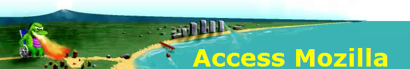

管理者：Aaron Leventhal - aaronleventhal@moonset.net
このページでは Mozilla で現在すすめられているウェブブラウザのアクセシビリティ作業に関する資料を取り上げます。
はじめに
- 今日のソフトウェアアクセシビリティ：コンピュータソフトウェアのアクセシビリティは過去 20 年間で大幅に改善されました。この記事では、開発された技術とその発展を振り返ります。
- Mozilla アクセシビリティ・スライドショー：スライドショーが画像に大きく依存していることをご容赦ください。アクセシブルなテキスト版 もあります。
新着情報は？
- Voice of the Nation's Blind に掲載された Aaron Leventhal のインタビュー -- Firefox とアクセシビリティ業界について。
- ACB Radio による CSUN Firefox アクセシビリティ講演の録音 （クリップ 3 までスキップ） -- JAWS との互換性を実現した Firefox に関する合同発表の音声録音がついに登場です！この講演は非常に人気があり、講演開始前 10 前までに入場しなかった人たちは会場入りできなかったほどでした。ドアのところで会場に入ろうとする人たちもいました（講演者の一人もその中に混じっていました）。講演者は、IBM の Aaron Leventhal、 Freedom Scientific の Glen Gordon、そして Mozilla Corporation の Mike Beltzner でした。
- Windows 用 Firefox の第 508 条への準拠 -- 私達が知る限り Voluntary Product Accessibility Template （VPAT：自主的製品アクセシビリティテンプレート） で示されたアクセシビリティコンプライアンスを達成した初のブラウザとなりました。これにより、合衆国政府による採用が可能になりました。
- NFB が Firefox への支持表明 -- 米国視覚障害者連合 （National Federation of the Blind） は最近 Firefox をテストし、高い評価をしてくれました。是非ご覧ください。
- Firefox 1.5 におけるアクセシビリティ機能 -- 私たちが対応できているもの （また、まだ私たちが克服しなければならない点）。
- Firefox 1.5 における Accessible DHTML/JavaScript/AJAX - これらの技術をはじめてサポートする Firefox 1.5 のためにアクセシブルな Web アプリケーションを書くための情報。
- Firefox における Accessible DHTML 実装 - Web サイト構築を担当する人に向けた技術的なスライド発表資料 （MS-PowerPoint 形式の発表資料）。
- IBM が Firefox 1.5 に向けたアクセシビリティサポートへの貢献 をアナウンスしました。
- Mozilla Links Newsletter （2004年 10月 8日版） に掲載された Mozilla アクセシビリティ設計担当者 Aaron Leventhal とのインタビュー 【訳注：和訳版】 をご覧ください。
- さらに、もう一つ別に Bazzmann （イタリアのコンピュータ雑誌） によるインタビュー もどうぞ。
- 開発進捗状況のページ - Windows 上で動作する Firefox 1.5 のアクセシビリティのために
「あなた」とはどのような人？
- ユーザやテスタ、またはユーザとなるかもしれない人々
- 鑑定人または備品調達担当者
- Web 作者： 2006 年 8 月 7 日更新、アクセシブルな DHTML
- 支援技術ベンダー
- 品質保証 （QA） 技術者
- UI デザイナや開発者
- コアの Gecko 開発者
- Mozilla 以外のプロジェクトでアクセシビリティを担当している外部開発者
- 特に Linux や UNIX でのアクセシビリティに関心のある人
議論のための場所とコミュニティ
Mozilla の accessibility ニュースグループ での議論 【英語】 を追って、私たちの Mozilla アクセシビリティ開発努力について語ってください。キーボードを使った Mozilla の操作法や、画面読み上げソフト、画面拡大鏡、音声認識ソフトといった製品と Mozilla との連携をどのように実現するかを話し合いましょう。メーリングリスト版は mozilla-accessibility-request@mozilla.org を講読してください。個人的な質問は、aaronleventhal@moonset.net までお寄せください。